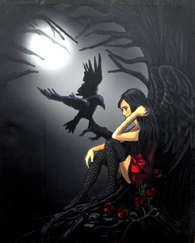

EDGAR ALLAN POE
The Life of Poe
The name Poe brings to mind images of murderers and madmen, premature burials, and mysterious women who return from the dead. His works have been in print since 1827 and include such literary classics as “The Tell-Tale Heart,” “The Raven,” and “The Fall of the House of Usher.” This versatile writer’s oeuvre includes short stories, poetry, a novel, a textbook, a book of scientific theory, and hundreds of essays and book reviews. He is widely acknowledged as the inventor of the modern detective story and an innovator in the science fiction genre, but he made his living as America’s first great literary critic and theoretician. Poe’s reputation today rests primarily on his tales of terror as well as on his haunting lyric poetry. Just as the bizarre characters in Poe’s stories have captured the public imagination, so too has Poe himself. He is often seen as a morbid, mysterious figure lurking in the shadows of moonlit cemeteries or crumbling castles. This is the Poe of legend. But much of what we know about Poe is wrong, the product of a biography written by one of his enemies in an attempt to defame the author’s name.
The real Poe was born to traveling actors in Boston on January 19, 1809, but within three years both of his parents had died. Poe was taken in by the wealthy tobacco merchant John Allan and his wife Frances Valentine Allan in Richmond, Virginia, while his brother and sister went to live with other families. Mr. Allan reared Poe to be a businessman and a Virginia gentleman, but Poe dreamt of emulating his childhood hero, the British poet Lord Byron. The backs of some of Allan’s ledger sheets reveal early poetic verses scrawled in a young Poe’s handwriting and show how little interest Edgar had in the tobacco business.
In 1826 Poe left Richmond to attend the University of Virginia, where he excelled in his classes but accumulated considerable debt. The miserly Allan had sent Poe to college with less than a third
of the funds he needed, and Poe soon took up gambling to raise money to pay his expenses. By the end of his first term Poe was so desperately poor that he burned his furniture to keep warm. Humiliated
by his poverty and furious with Allan, Poe was forced to drop out of school and return to Richmond. However, matters continued to worsen. He visited the home of his fiancée, Elmira Royster, only to
discover that she had become engaged to another man
The heartbroken Poe’s last few months in the Allan mansion were punctuated with increasing hostility toward Allan until Poe finally stormed out of the home in a quixotic quest to become a great poet and to find adventure. He accomplished the former by publishing his first book Tamerlane when he was only eighteen; to achieve the latter, he enlisted in the United States Army. Two years later he entered the United States Military Academy at West Point while continuing to write and publish poetry. But after only eight months at West Point Poe was thrown out.
 Broke and alone, Poe returned to Baltimore. Shortly after his return his father, John Allan died, leaving Poe out of his will, which did, however, provide for an illegitimate child whom Allan had
never seen. By then Poe was living in poverty but had started publishing his short stories, one of which won a contest sponsored by the Saturday Visiter. The connections Poe established through the
contest allowed him to publish more stories and to eventually gain an editorial position at the Southern Literary Messenger in Richmond. It was at this magazine that Poe finally found his life’s work
as a magazine writer.
Broke and alone, Poe returned to Baltimore. Shortly after his return his father, John Allan died, leaving Poe out of his will, which did, however, provide for an illegitimate child whom Allan had
never seen. By then Poe was living in poverty but had started publishing his short stories, one of which won a contest sponsored by the Saturday Visiter. The connections Poe established through the
contest allowed him to publish more stories and to eventually gain an editorial position at the Southern Literary Messenger in Richmond. It was at this magazine that Poe finally found his life’s work
as a magazine writer.
Within a year Poe helped make the Messenger the most popular magazine in the south with his sensational stories and his scathing book reviews. Poe soon developed a reputation as a fearless critic who not only attacked an author’s work but also insulted the author and the northern literary establishment. Poe targeted some of the most famous writers in the country; one of his victims was the anthologist and editor Rufus Griswold.
At the age of twenty-seven, Poe brought Maria and Virginia Clemm to Richmond and married Virginia, who was not yet fourteen. The marriage proved a happy one but money was always tight. Dissatisfied with his low pay and lack of editorial control at the Messenger, Poe moved to New York City and to Philadelphia a year later, where he wrote for a number of different magazines. In spite of his growing fame, Poe was still barely able to make a living. For the publication of his first book of short stories, Tales of the Grotesque and Arabesque, he was paid with twenty-five copies of his book. He would soon become a champion for the cause of higher wages for writers as well as for an international copyright law. To change the face of the magazine industry, he proposed starting his own journal, but he failed to find the necessary funding.
The January 1845 publication of “The Raven” made Poe a household name. He was again living in New York City and was now famous enough to draw large crowds to his lectures—he also began demanding better pay for his work. He published two books that year, and briefly lived his dream of running his own magazine when he bought out the owners of the Broadway Journal. The failure of the venture, his wife’s deteriorating health, and rumors spreading about Poe’s relationship with a married woman, drove him from the city in 1846. At this time he moved to a tiny cottage in the country. It was there, in the winter of 1847, that Virginia died of tuberculosis at the age of twenty-four. Her death devastated Poe and left him unable to write for months. His critics assumed he would soon be dead. They were right. Poe only lived another two years and spent much of that time traveling from one city to the next giving lectures and finding backers for his latest proposed magazine project to be called The Stylus.
He returned to Richmond in the summer of 1849 and reconnected with his first fiancée, Elmira Royster Shelton who was now a widow. They became engaged and intended to marry in Richmond after Poe’s return from a trip to Philadelphia and New York. However, on the way to Philadelphia, Poe stopped in Baltimore and disappeared for five days. He was found in the bar room of a public house that was being used as a polling place for an election. The magazine editor Joseph Snodgrass sent Poe to Washington College Hospital, where Poe spent the last days of his life far from home and surrounded by strangers. Neither Poe’s mother-in-law nor his fiancée knew what had become of him until they read about it in the newspapers. Poe died on October 7, 1849 at the age of forty. The exact cause of Poe’s death remains a mystery, thought it is believed his life long battle with drugs and alcohol
It can be said it was not only Poe’s creativity and technical writing ability that attributed to his popularity, but his capacity to recognize and express the duality of human nature and the frailties of man, a theme he was very much familiar with. Poe’s depressive and self destructive nature combined with his intellect and love of writing produced works that still live on today.